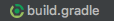
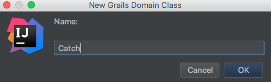
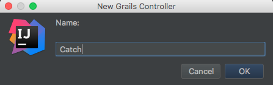
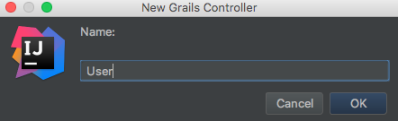
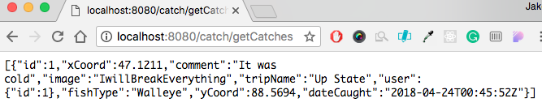
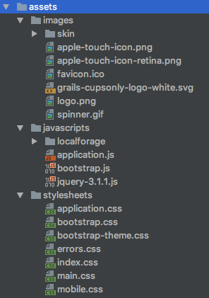
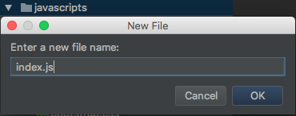
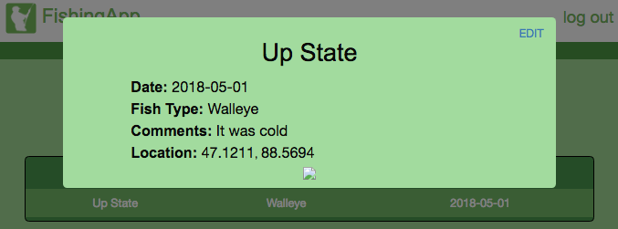
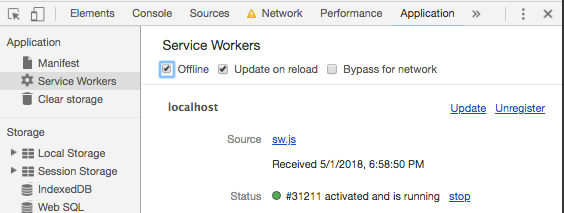
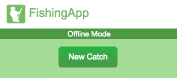

Grails Offline Fishing App Tutorial
By Jake Mager
Introduction
This tutorial covers the basics and everything you need to get started with offline support when developing with Grails.
A great introduction to start creating progressive web apps (PWA) and using service workers with Grails.
We will be creating an offline Fishing App to demonstarte this. The following will be covered:
- Building a Grails App
- Spring Security Login
- Adding to the Grails database using ajax
- Handling offline interactions
- Building an offline queue with localforage
- Image Uploading
- Bootstrap Modals
- Geolocation
However, the app will not be 100% done by the end of the tutorial, what won't be covered:
- Spring Security Registration
- Styling (however a .css will be included)
- Using multiple pages
- Full PWA capabilities
Prerequisites
- It is recommended that you have completed all the programming assignements on cs4760.cs.mtu.edu, but this tutorial will go step by step and be as in depth as possible.
- Basic knowledge of HTML and jQuery is required
- We will be using IntelliJ IDEA
Finished Web App
Home Page
Login
New Catch
New Catch Filled
Items pending in queue
Queue Uploaded
Catch Details
Catch Details Edit Mode
Features:
- User Login
- Offline Access
- Saving fish catches with an image
- Saving offline catches into queue until back online
- Viewing the catches
- Editing catch
Let's Get Started
Go on ahead and open IntelliJ and create a New Project and select the  Grails project on the left menu of the New Project Window
Grails project on the left menu of the New Project Window
Let's name our project "FishingApp"
First things first, lets setup Spring Security Users
Step 1: Setting Up Users
We will use the Spring Security Core plugin with an additional plugin, the Spring Security UI plugin. The Spring Security Core authenticates users and control access to pages. The Spring Security UI provides convenient UI for controlling access and users.
Documentation: Spring Security Core, Spring Security UI
To install plugins, all you need to do is to list them in  file. Near the bottom of the file, you should see a long list of dependencies. Cut and paste into this dependencies list the declarations below:
dependencies {
...
// Adds Spring Security plugins
compile 'org.grails.plugins:spring-security-core:3.2.0'
compile 'org.grails.plugins:spring-security-ui:3.1.1'
compile 'org.grails.plugins:mail:2.0.0.RC6'
}
Now setup Spring Security Core.
Open the Grails command prompt by clicking the “Tools” in the menu bar then select “Grails” followed by “Grails Command”. In the widow that pops up enter:
s2-quickstart fishingapp User RoleThen add the following to the bottom of grails-app → conf → application.groovy
grails.plugin.springsecurity.logout.postOnly = falseThis will make logging out simple in the future
Well we are here, also add the following under grails: at the top.
resources:
pattern: '/**'This will help us when we use the webapp folder later in the tutorial
Step 2: Creating Controller and Domain
Before we make any new domains or controllers lets modify the User controller
Add the following after String password. This will hold our users first and last name
String fname
String lname
Now let us create a new domain for Catch
In our new domain, we shall create variables for the trip name, fish type, comments, x and y coordinates, the date caught, and a path to where we will store our uploaded images
The Catch.groovy domain should look as follows:
package fishingapp
class Catch {
String tripName
String fishType
String comment
Float xCoord
Float yCoord
Date dateCaught
String image
static belongsTo = [user: User]
static constraints = {
tripName blank: false
fishType blank: false
comment nullable: true
xCoord nullable: true
yCoord nullable: true
dateCaught blank: false
image nullable: true
}
}
The Catch domain needs a controller, lets create one
We will also need a controller for our User
Grails uses a MVC architectural pattern . The controller is where we will be handling all the database transications called from the view
Awesome! These will be our controllers for the application. We will come back to these later to create some methods
Step 3: Bootstrapping and Permissions
Before we do anything else with the app, we are going to change some permissions and bootstrap (preload) some data into our database
To change permissions to certain pages in our app go to grails-app → conf → application.groovy
In the static rules, add the following to the bottom. These permissions will let us have access to the catch controller methods, the service worker, User getLogin method, and access to H2 console.
grails.plugin.springsecurity.controllerAnnotations.staticRules = [
... ,
[pattern: '/logout/**', access: ['permitAll']], // for easy access to logout
[pattern: '/catch/**', access: ['permitAll']], // for catch controller
[pattern: '/sw.js', access: ['permitAll']], // for service worker
[pattern: '/User/getLogin', access: ['permitAll']], // to check user login info
[pattern: '/dbconsole/**', access: ['ROLE_ADMIN']], // for access to H2 console
]
And yes, we have not created all of these pages / methods yet. We will get to that soon I promise.
Now that the permissions are set let's bootstrap some data! Open up init → fishingapp → BootStrap
Inside the BootStrap.groovy file everything can be created in the init definition. Add the following to the definition:
def init = { servletContext →
def today = new Date()
// Add for creating Roles and Users
def adminRole = new Role(authority: 'ROLE_ADMIN').save(flush: true)
def userRole = new Role(authority: 'ROLE_USER').save(flush: true)
// Create the admin account and save it
def testAdmin = new User(username: 'jake', password: 'password', fname: 'Jake', lname: 'Mager')
testAdmin.save(flush: true)
UserRole.create testAdmin, adminRole, true
UserRole.withSession {
it.flush()
it.clear()
}
// Create a fish and save it
def fish = new Catch(tripName: "Up State", fishType: "Walleye", comment: "It was cold", dateCaught: today, xCoord: 47.1211, yCoord: 88.5694, image: "IwillBreakEverything", user: testAdmin)
fish.save(flush:true)
}
Permissions and Bootstrapping complete! Time for the controller
Step 4: Back to the Controller
Open back up the Catch controller and put the following inside the CatchController class:
def springSecurityServiceThis will give us access to spring security services
Now create a method called getCatches, we will then use spring security to get the user and return all the catches by the user
def getCatches() {
User user = springSecurityService.currentUser
render Catch.findAllByUser(user).toArray() as JSON
}
Let's test this out. Run the grails app
 and navigate to http://localhost:8080/login/auth
and navigate to http://localhost:8080/login/auth
Log in with our bootstrapped account username: Jake password: password
Now navigate to http://localhost:8080/catch/getCatches this is the controller we just made
The website should return something like this
Cool!! Our method works as it should
Time to create a method for the User controller to check if the user is logged in, so open up the User controller and create a getLogin method
class UserController {
def springSecurityService
// this function checks if the user is logged in
def getLogin() {
User user = springSecurityService.currentUser
if (user != null) {
render user.fname
} else {
render false
}
}
}
We can test this method the same as the Catch one by going to the URL http://localhost:8080/user/getLogin it should display "Jake" if you're logged in and "false" if you're not
Now that we have that setup, let's get to setting up our navbar!
Step 5: Main Template, Javascripts, and Styling
Before we get to creating the navigation bar, we need to install bootstrap and localforage
Download the assets, this includes bootstrap 3.3.7, localforage, pre-made CSS, and a logo image. Put all these resources in the relative folders of your project.
You will have to delete main.css, grails.css, bootstrap.js, jquery-2.2.0.min.js, and bootstrap.css from your assets first!
After you are done, your asset directory should look like this:
Sweet, now that we have all that installed, let us start creating the navigation
This will all be done in grails-app → views → layouts → main.gsp
The main.gsp makes a template, that can be used on all pages of our app. Once you open main.gsp, include all the JS and CSS you just added in the header
<head>
...
<asset:javascript src="jquery-3.1.1.js" />
<asset:javascript src="bootstrap.js" />
<asset:javascript src="localforage/localforage.js" />
<asset:stylesheet src="bootstrap.css" />
<asset:stylesheet src="bootstrap-theme.css" />
<asset:stylesheet src="main.css"/>
...
</head>
Delete the div with the class "navbar navbar-default navbar-static-top"
In its place we will put the login modal (a simple boilerplate modal I made a long time ago)
%{--Login DIV--}%
<div class="modal fade" id="login" role="dialog">
<div class="modal-dialog">
<div class="login s2ui_center ui-corner-all" style="text-align:center">
<div class="login-inner">
<g:form controller="login" action="authenticate" method="post" autocomplete="off">
<div id="login-inner" class="sign-in">
<h2>FishingApp</h2>
<div>
<input autofocus="autofocus" name="username" id="username" type="text" class="form-control" placeholder="Username">
</div>
<div class="passwordDiv">
<input name="password" id="password" type="password" class="form-control" placeholder="Password">
</div>
<g:actionSubmit value="Login" class="button" />
</div>
</g:form>
</div>
</div>
</div>
</div>
We will also replace the old navigation bar with our own:
<div id="navContainer">
<nav id="navMain">
<a id="mainLogoText" href="/"><g:img id="mainLogo" dir="images" file="logo.png" /> FishingApp</a>
<a class="loginBtn" id="loginBtn">Login</a>
</nav>
</div>
We will make the login modal alive using javascript, main.gsp uses application.js by default so open that up under javascripts asset
First include a no conflict for jQuery, it seems to be interfering with the modals
jQuery.noConflict(); // for use with modals
Then we will add a listener for the login anchor to open the login modal
// listener for login anchor
$('#loginBtn').click(function() {
$("#login").modal();
});
Go ahead and test out the login! Remember you can go to http://localhost:8080/user/getLogin to see if it worked.
Time to finish up the nav bar, once we log in we want to switch that login button to logout. We also want to let the user know if they are in offline mode.
To do this let's create a function called getLogin() in the application.js
In the function we need to handle if the user is online or offline, to do this create a conditional statement using
navigator.onLine
if (navigator.onLine) { ... } else { ... }
Remeber that method we made earlier in the User controller? Time to use it
If the user is online we will want to switch the login button to logout. The user can logout by going to http://localhost:8080/logout
// call method getLogin in user
$.get("user/getLogin", function (firstName) {
// check if user is logged in
if (firstName !== 'false') {
// replace navContainer with new navigation HTML
$("#navContainer").html(
"<nav id='navMain'>" +
"<a id='mainLogoText' href='/'><img id='mainLogo' src='/assets/logo.png' /> FishingApp</a>" +
"<a class='loginBtn' href='/logout'>log out</a>" +
"</nav>" +
"<nav id='navUser'>" +
"<a>Logged in as " + firstName + "!" +
"</nav>"
);
$("#showCatchesButton").show();
return username;
} else { // the navbar is already made with 'login'
return false;
}
});
The getLogin method returns false if the user is not logged in, else we will display the users firstname by recreating the navbar
We will also want to display if the user is in offline mode. This is simply remaking the navbar HTML. Place the following code into the else statement:
$("#navContainer").html(
"<nav id='navMain'>" +
"<a id='mainLogoText' href='/'><img id='mainLogo' src='/assets/logo.png' /> FishingApp</a>" +
"</nav>" +
"<nav id='navUser'>" +
"<a>Offline Mode</a>" +
"</nav>"
);
return false;
Now the navigation bar is finished!
You can now test and see that the login button is now effective! Unfortuntly you will not be able to test the offline part yet
Step 6: index.gsp
Go ahead and open up the index.gsp, this is where all the HTML for the app will be done
For simplicity sake, we will just be using Bootstrap Modals , however this app would be possible with multiple pages
To start just delete everything currently in between the body tag of the HTML
Now place our styling in between the head tag <asset:stylesheet src="index.css" />
There will need to be a div for the catch queue and a div for saved catches, there also need a button for the new catch modal and to display the saved catches
This will cover everything:
<div id="container">
%{-- Catch Queue Div --}%
<div id="catchQueue"></div>
<button class='button' id="newCatchButton">New Catch</button> <br />
%{-- Show Catches div--}%
<button class='button' id="showCatchesButton">Your Catches</button>
<div id="showCatches"></div>
</div>
Now for the new catch modal, just place this under the container
%{-- New Catch Modal--}%
<div class="modal fade" id="newCatch" role="dialog">
<div class="modal-dialog">
<form>
<input type="hidden" id="modalCatchID" />
<h2>New Catch</h2>
<label for="tripName">Trip Name</label>
<input type="text" id="tripName" placeholder="The name of your trip...">
<label for="fishType">Fish Type</label>
<input type="text" id="fishType" placeholder="The type of fish you caught...">
<label for="dateCaught">Date Caught</label>
<input type="date" id="dateCaught" />
<label for="xCoord">X-Coordinate</label>
<input type="num" id="xCoord" placeholder="X coordinate of fish location">
<label for="yCoord">Y-Coordinate</label>
<input type="num" id="yCoord" placeholder="Y coordinate of fish location">
<label for="comment">Comment</label>
<input type="text" id="comment" placeholder="Anything you would like to mention?">
<label for="image">Upload Image</label>
<input id="image" type="file" accept="image/*" capture />
<div id="imageDiv"></div>
<button id="submitNewCatch" class="button" type="button">Submit</button>
<button type="button" id="closeNewCatch" class="button center-block" >Close</button>
</form>
</div>
</div>
There also needs to be a modal for when a user edits a catch (yes we are going that far)
%{-- catchDetail Modal --}%
<div class="modal fade" id="catchDetail" role="dialog">
<div class="modal-dialog">
<a id='editCatchButton' onclick="editCatch()">EDIT</a>
<div id="displayTripModal">Placeholder eh</div>
</div>
</div>
Last but not least! Including index.js in the index.gsp
To do this, put the following at the bottom of the index.gsp (after the closing html tag)
<content tag="footScripts">
<asset:javascript src="index.js"/>
</content>
The index.gsp page is all done now!
Step 7: Finishing the Catch Controller
Open the CatchController.groovy back up. We already implemented a getCatches() method. We also need a method for saving new catches, saving edited catches, and showing the details of a catch
First up: saving catches. Create a newCatch method def newCatch()
Remember we need to save the following:
- User
- Trip name
- Fish type
- Date caught
- X coordinate
- Y coordinate
- Comment
- Image path
An image will also need to be saved on the server
In the method we can get the user by making a variable and using spring security service
User user = springSecurityService.currentUser
Grails handles saving dates very strictly, we must parse the input
def dateCaughtModified = new Date().parse("yyyy-MM-dd", params.dateCaught)
If an image is passed we need to generate a path name and save the image to the server
The image will be saved in src → webapp → Images You will have to create this directory
If you are on a server the path will not use System.getProperty("user.home")
The following code saves the image:
def destFilename
def imageUpload = params.image
// if image was passed else make it null (queue sends null parameter as string)
if (imageUpload != null && imageUpload != "null") {
def destDir = System.getProperty("user.home") + "/[YOUR PATH HERE]/FishingApp/src/main/webapp/Images"
def id = UUID.randomUUID().toString()
while (Catch.countByImage(id) > 0) { // if this photo name already exist make a new one
id = UUID.randomUUID().toString()
}
destFilename = String.format("%s.jpg", id)
File destFile = new File(destDir, destFilename)
destFile.createNewFile()
imageUpload.transferTo(destFile)
} else {
destFilename = null
}
Make sure that you modify "/[YOUR PATH HERE]/FishingApp/src/main/webapp/Images" to where you have the app saved
Time to save it all!
def fishCatch = new Catch(
user: user,
tripName: params.tripName,
fishType: params.fishType,
dateCaught: dateCaughtModified,
xCoord: params.xCoord,
yCoord: params.yCoord,
comment: params.comment,
image: destFilename,
)
fishCatch.save(flush: true, failOnError: true)
render "OH YES OH YES"
Awesome! Now we can save catches
Next, make a method editCatch() to save any edited catches
It is basically the same thing as newCatch() except it is getting a catch to overwrite:
// updates the catch in the database
def editCatch() {
def imagePath
def dateCaughtModified = new Date().parse("yyyy-MM-dd", params.dateCaught)
Catch getCatch = Catch.get(params.ID) // get the catch
// if there is no image for the current catch
if (getCatch.image != null) {
imagePath = getCatch.image
} else {
imagePath = String.format("%s.jpg", UUID.randomUUID().toString())
}
// replace image
def imageUpload = params.image
if (imageUpload != null) {
def destDir = System.getProperty("user.home") + "/[YOUR PATH HERE]/FishingApp/src/main/webapp/Images"
File destFile = new File(destDir, imagePath)
destFile.createNewFile()
imageUpload.transferTo(destFile)
getCatch.image = imagePath
}
// replace everything else
getCatch.tripName = params.tripName
getCatch.fishType = params.fishType
getCatch.dateCaught = dateCaughtModified
getCatch.xCoord = Float.parseFloat(params.xCoord)
getCatch.yCoord = Float.parseFloat(params.yCoord)
getCatch.comment = params.comment
getCatch.save(flush: true, failOnError: true)
render "OH YES OH YES"
}
Lastly, we need a method to return the catches details. Make method getCatch():
def getCatch() {
render Catch.findAllById(params.catchID).toArray() as JSON
}
This returns a JSON of all the domain variables of the catch from it's ID
Congrats! The controller is complete, can't wait to test it!
Step 8: Starting index.js
Go ahead and create new file index.js in the javascripts assets
We are going to be making a lot of functions here. This is where most of the action is going on.
First lets create a button listener and function so we can display all of the users catches
Whenever we make any listeners, make sure to put them in the $(document).ready(function() { ... } function
This will always allow the javascript to find the IDs on the page after it loads
To create a listener for a button in jquery do the following:
$('#showCatchesButton').click(function() {
...
}
Get the div with ID "showCatches" and check if it is visible, if it is hide it. If not check if there is data in the table so we don't make any unessessary calls to the server. If not lets get the catches!
// get show catch div
var showCatchesDiv = $('#showCatches');
// check if div is visible, hide it if not
if (showCatchesDiv.is(":visible")) {
showCatchesDiv.hide();
// this checks if we already loaded data into the div so we don't have to call to server again
} else if (showCatchesDiv.children().length) {
showCatchesDiv.show();
// call to the controller Catch, method getCatches
} else { ...
Remember that controller we made earlier? getCatches - Yeah that one. We can make an ajax call using
$.getJSON("catch/getCatches", function (data) { ...
This returns a JSON inside the data variable and if it has any length we know it has data and we can easily extract it and put it to use
var catches = [];
// if the user has catches
if (data.length > 0) {
catches.push("<table>" +
"<tr>" +
"<th>Trip</th><th>Type</th><th>Date</th>" +
"</tr>"
);
// getCatches returns an array converted as JSON, go through the JSON file creating populated rows
$.each(data, function (key, val) {
catches.push(
"<tr id='catch_" + val.id + "' onclick='showCatchDetail(" + val.id + ")'>" +
"<td>" + val.tripName + "</td>" +
"<td>" + val.fishType + "</td>" +
"<td>" + val.dateCaught.substring(0, 10) + "</td>" +
"</tr>"
);
});
catches.push("</table>");
// combine the rows as one HTML object and push it to the showCatches div
$(
catches.join("")
).appendTo("#showCatches");
} else {
// if there isn't anything in the database
showCatchesDiv.html("You haven't caught anything yet!");
}
// make the div visible
showCatchesDiv.show();
});
}
See the showCatchDetail function in <tr id='catch_" + val.id + "' onclick='showCatchDetail(" + val.id + ")'></tr> ??
Lets implement that now, all it needs to do is make another ajax call to the getCatch method in the controller and with its return data put it in the display trip modal
Remember this isn't a listener so we can put it above the document ready function
function showCatchDetail(index) {
$.getJSON("catch/getCatch", { catchID: index }, function (data) {
// getCatch returns an array converted as JSON
// only returns one JSON object
// has a hidden paragraph tag with ID as value
$.each(data, function (key, val) {
$("#displayTripModal").html(
"<h2 id='tripNameModal'>" + val.tripName + "</h2>" +
"<div id='tripModalData'>" +
"<b>Date: </b><p id='dateCaughtModal'>" + val.dateCaught.substring(0, 10) + "</p><br />" +
"<b>Fish Type: </b><p id='fishTypeModal'>" + val.fishType + "</p><br />" +
"<b>Comments: </b><p id='commentModal'>" + val.comment + "</p><br />" +
"<b>Location: </b><p id='xCoordModal'>" + val.xCoord + "</p>, <p id='yCoordModal'>" + val.yCoord + "</p><br />"
);
// if there is an image append it!
if (val.image !== null) {
$("#displayTripModal").append("<img class='catchDetailImg' src='../../Images/" + val.image + "'/></div>");
}
$("#modalCatchID").text(index)
});
});
$("#editCatchButton").show();
$("#catchDetail").modal();
}
Go ahead and test it!
The reason for no image is because we put a pseduo link in the bootstrap
See the edit button at the top right? We might as well as finish this
Make a function editCatch() that is just going to extract everything from the modal then put it in textboxs
function editCatch() {
var tripName = $("#tripNameModal").text();
var fishType = $("#fishTypeModal").text();
var dateCaught = $("#dateCaughtModal").text();
var comment = $("#commentModal").text();
var xCoord = $("#xCoordModal").text();
var yCoord = $("#yCoordModal").text();
$("#displayTripModal").html(
"<form>" +
"<p>Trip Name</p>" +
"<input id='modalTripName' type='text' class='modalTextbox' value='" + tripName + "' /><br />" +
"<p>Fish Type</p>" +
"<input id='modalFishType' type='text' value='" + fishType + "' /><br />" +
"<p>Comment</p>" +
"<input id='modalComment' type='text' value='" + comment + "' /><br />" +
"<p>X Coord</p>" +
"<input id='modalXCoord' type='text' value='" + xCoord + "' /><br />" +
"<p>Y Coord</p>" +
"<input id='modalYCoord' type='text' value='" + yCoord + "' /><br />" +
"<p>Date Caught</p>" +
"<input id='modalDateCaught' type='date' value='" + dateCaught + "' /><br />" +
"<p>Image</p>" +
"<input id='modalImage' type='file' accept='image/*' capture />" +
"<input type='submit' onclick='submitEditCatch()' class='button' />" +
"</form>"
);
$("#editCatchButton").hide();
}
This of course doesn't work yet - we need the submitEditCatch function. But lets wait to make the submit new catch function fist!
But before we get to that - this is an offline app. We need to get the app ready for offline implementation fist
Step 9: Making the App Offline
Implementing the webapp offline is not that difficult to do. To do this we will be caching the app to the users device using service workers. All the data will be store in IndexedDB using localForage.
More detailed guides: service workers and localForage
LocalForage will make it easy to cache items in IndexedDB and if that is not available it will then store it into Local Storage. The reason we are using IndexedDB is because it is allowed to store a larger amount than Local Storage.
First things first, create sw.js in the src → webapp directory.
This is actually very simple, we will make listener for service worker install and fetch
The install can be done as below. This makes a listener for the install then opens the cache for 'fishingApp' and adds all of the pages that need to be saved offline to the cache.
self.addEventListener('install', function (event) {
self.skipWaiting();
event.waitUntil(
caches.open('fishingApp').then(function (cache) {
return cache.addAll(
[
'/',
'/assets/jquery-3.1.1.js?compile=false',
'/assets/index.css?compile=false',
'/assets/main.css?compile=false',
'/assets/bootstrap.css?compile=false',
'/assets/bootstrap-theme.css?compile=false',
'/assets/bootstrap.js?compile=false',
'/assets/index.js?compile=false',
'/assets/application.js?compile=false',
'/assets/logo.png',
'/assets/localforage/localforage.js?compile=false',
'/assets/localforage/localforage.min.js?compile=false',
'/assets/localforage/localforage.nopromises.js?compile=false',
'/assets/localforage/localforage.nopromises.min.js?compile=false',
]
);
})
);
console.log('Install event:', event);
});
The links are slightly differnt than what you would expect because grails compiles the code like this. It also adds the ?compile=false to the end of all the assets.
Next the fetch, which comes from Google Developers
self.addEventListener('fetch', function(event) {
event.respondWith(
caches.match(event.request).then(function(response) {
return response || fetch(event.request);
})
);
});
Lastly, we need to register the service worker! Navigate back to index.js
In the document ready function let's first check if the app is online and if it is register the service worker
To check if the app is online use: if (navigator.onLine) { ... }
Then to register the service worker (after checking if it is supported)
if ('serviceWorker' in navigator) {
navigator.serviceWorker
.register('/sw.js')
.then(function() { console.log("Service Worker Registered"); });
}
and if the app isn't online, might as well as hide the show catches button $("#showCatchesButton").hide();
The app is now offline capable! Go ahead and test it - on Google Chrome you can go to View → Developer → Javascript Console
Under the Application tab, you can click 'Service Workers' and check Offline

Step 10: Saving to the Database
Time to save the catches to the database! We will be using the controller newCatch method to save everything
In index.js let's first make an event listener for our new catch button to open the modal we made earlier
$('#newCatchButton').click(function() {
$("#newCatch").modal();
});
and a listener to close the modal
$('#closeNewCatch').click(function() {
$("#newCatch").modal('toggle');
});
Now time to make the listner when the catch is submited - we will extract the data from the form then send it to the controller or save it to the users cache with localforage
$('#submitNewCatch').click(function() {
var tripName = $("#tripName");
var fishType = $("#fishType");
var dateCaught = $("#dateCaught");
var comment = $("#comment");
var xCoord = $("#xCoord");
var yCoord = $("#yCoord");
var imageUpload = $('#image')[0].files[0];
Let's do some quick user validation before we do anything
if (dateCaught.val() === "") {
dateCaught.css("border", "1px solid red");
alert("Enter a date!");
return;
} else if (tripName.val() === "") {
tripName.css("border", "1px solid red");
alert("Enter a trip name!");
return;
} else if (fishType.val() === "") {
fishType.css("border", "1px solid red");
alert("Enter a fish type!");
return;
}
We are then going to check if the user is online and logged in
if (navigator.onLine && $("#loginBtn").text() !== "Login") { ... }
If it is, we are going to put everything in a jform
var jForm = new FormData();
if (imageUpload !== undefined) {
jForm.append("image", imageUpload);
}
jForm.append("tripName", tripName.val());
jForm.append("fishType", fishType.val());
jForm.append("dateCaught", dateCaught.val());
jForm.append("comment", comment.val());
jForm.append("xCoord", xCoord.val());
jForm.append("yCoord", yCoord.val());
Now time for ajax!
$.ajax({
url: "catch/NewCatch",
type: "POST",
data: jForm,
mimeType: "multipart/form-data",
contentType: false,
cache: false,
processData: false,
success: function() {
tripName.val("");
fishType.val("");
dateCaught.val("");
comment.val("");
xCoord.val("");
yCoord.val("");
$('#image').val("");
alert("Saved catch!");
}
});
If you try to upload any images you will notice that grails says the upload size is too large. We must change the max upload size.
Open up the application.yml and put the following under the controllers:
upload:
maxFileSize: 262144000
maxRequestSize: 262144000
Rerun the app and you will now be able to uplaod larger images!
Now it is time to handle if the user is not online, we will save to the user cache using localForage
To do this we will be storing the data in an array of dictonaries with the photo being stored as a blob in key value pair orientation
First things first, lets check if the user is attempting to upload an image with their catch
if (imageUpload !== undefined) {
And if they are we will use a FileReader to convert the image to a blob
Then generate a photoID to use a key
if (imageUpload !== undefined) {
// for converting image to blob string setup
var reader = new FileReader();
reader.readAsDataURL(imageUpload);
var photoID = generateGUID(); // generate id for the photos
}
The function for generateGUID will need to be added to the top of index.js
// Use with generateGUID function to make random int
function genString() {
return (((1+Math.random())*0x10000)|0).toString(16).substring(1);
}
// For generating unique ID
function generateGUID() {
return (genString() + genString() + "-" + genString() + "-4" + genString().substr(0,3) + "-" + genString() + "-" + genString() + genString() + genString()).toLowerCase();
}
Next we will need to put everything in the localforage, which is done by first setting the driver - which is IndexedDB
localforage.setDriver(localforage.INDEXEDDB).then(function() { ...
Then put all of the data in a dictonary
var catchData = {
tripName: tripName.val(),
fishType: fishType.val(),
dateCaught: dateCaught.val(),
comment: comment.val(),
xCoord: xCoord.val(),
yCoord: yCoord.val()
};
If there is an image, store it as it's own key value pair or make it null in our dictonary
if (imageUpload !== undefined) {
catchData.photoID = photoID; // put it in the dictionary
// store image in localForage
reader.onloadend = function() {
localforage.setItem(photoID, reader.result); // reader.result is the blob string
};
} else {
catchData.photoID = null; // put it in the dictionary as null
}
Now let's store the catch in the localForage, to do this check if there is already an array in the localForage and if there is, duplicate and push the new data to the array
var catches = [];
// get the key first
localforage.getItem('catches', function (err, value) {
// if there is anything in 'catches' we will push to it
if (value !== null) {
catches = value;
}
catches.push(catchData);
// clear localforage catches
localforage.setItem('catches', catches, function () {
alert("Added " + tripName.val() + " to queue, Login to upload catch!");
tripName.val("");
fishType.val("");
dateCaught.val("");
comment.val("");
xCoord.val("");
yCoord.val("");
$('#image').val("");
})
});
});
}
});
Saving an edited catch is basically the same:
function submitEditCatch() {
var catchID = $("#modalCatchID");
var tripName = $("#modalTripName");
var fishType = $("#modalFishType");
var dateCaught = $("#modalDateCaught");
var comment = $("#modalComment");
var xCoord = $("#modalXCoord");
var yCoord = $("#modalYCoord");
var imageUpload = $("#modalImage");
var jForm = new FormData();
// if there is an image, append it to the form
if (imageUpload[0].files.length) {
jForm.append("image", imageUpload[0].files[0]);
} else {
imageUpload = null;
}
jForm.append("ID", catchID.text());
jForm.append("tripName", tripName.val());
jForm.append("fishType", fishType.val());
jForm.append("dateCaught", dateCaught.val());
jForm.append("comment", comment.val());
jForm.append("xCoord", xCoord.val());
jForm.append("yCoord", yCoord.val());
$.ajax({
url: "catch/editCatch",
type: "POST",
data: jForm,
mimeType: "multipart/form-data",
contentType: false,
cache: false,
processData: false,
success: function() {
$("#catchDetail").modal('hide');
$("#showCatches").html("");
$("#showCatches").css("display", "none");
}
});
}
Step 11: Finishing the queue
Now that we have the data at least saving to the queue if the user is offline/not logged in. Lets test that out by showing the queue in the div we made earlier
In the document ready function we will want to check if anything is in the localforage and if it is, put it in the queue
localforage.setDriver(localforage.INDEXEDDB).then(function() {
localforage.getItem('catches', function (err, value) {
if (value != null) {
var html = "<table><tr><th>Catch Queue:</th></tr>";
for (var i = 0; i < value.length; i++) {
html += "<tr><td>" + value[i].tripName + "</tr></td>";
}
html += "<tr><td><button id='submitQueue' onclick='submitQueue()' class='button'>Upload Queue</button></td></tr></table>";
$("#catchQueue").html(html);
}
});
});
Go ahead and test it to make sure that the queue works, you will have to either be logged out or offline to test this!
Time to now save the queue when a user is logged in
Go ahead a create a function for submitQueue()
This checks if the user is logged in and online, then proceeds to go through each item in a queue - but we must send each catch to another function to avoid race conditions when accessing the localForage for the image blob
function submitQueue() {
// check if the user is logged in (kinda hacky)
if ($("#loginBtn").text() !== "Login") {
// check if user is online
if (navigator.onLine) {
// if they are, enter localforage and extract info
localforage.setDriver(localforage.INDEXEDDB).then(function () {
localforage.getItem('catches', function (err, value) {
// go through each item in the 'catches' key
for (var i = 0; i < value.length; i++) {
submitQueueHelper(value[i]); // This function is called to avoid race conditions
}
// after all items in the queue are submitted, remove them
localforage.removeItem('catches', function (err, value) {
$("#catchQueue").html("<b>Successfully Uploaded!</b>");
})
});
});
} else {
// user not online
alert("You have to be online to do that!")
}
} else {
// user not logged in
alert("Log in first!");
}
}
The submitQueueHelper function is almost identical to saving a new catch function
The differnce is that we must handle if a user has an image or not differntly and convert the blob text back to something grails can use
function submitQueueHelper(value) {
// All data being sent to catch/NewCatch is stored in here
var jForm = new FormData();
// if there is a photo
if (value.photoID !== null) {
// This is getting the photo of the catch out of localforage
// it then makes a promise in which the ajax is called after
// it is full filled
localforage.getItem(value.photoID, function (err, data) {
// convert the blob string back to an appropriate file
var block = data.split(";");
var contentType = block[0].split(":")[1];
var realData = block[1].split(",")[1];
var image = b64toBlob(realData, contentType);
jForm.append("tripName", value.tripName);
jForm.append("fishType", value.fishType);
jForm.append("dateCaught", value.dateCaught);
jForm.append("comment", value.comment);
jForm.append("xCoord", value.xCoord);
jForm.append("yCoord", value.yCoord);
jForm.append("image", image);
}).then(function () {
$.ajax({
url: "catch/NewCatch",
type: "POST",
data: jForm,
mimeType: "multipart/form-data",
contentType: false,
cache: false,
processData: false
});
localforage.removeItem(value.photoID);
});
} else {
jForm.append("tripName", value.tripName);
jForm.append("fishType", value.fishType);
jForm.append("dateCaught", value.dateCaught);
jForm.append("comment", value.comment);
jForm.append("xCoord", value.xCoord);
jForm.append("yCoord", value.yCoord);
jForm.append("image", null);
$.ajax({
url: "catch/NewCatch",
type: "POST",
data: jForm,
mimeType: "multipart/form-data",
contentType: false,
cache: false,
processData: false
});
}
}
The convert b64toBlob function (from OurCodeWorld.com
// Converts blob string to a blob file
// Taken from https://ourcodeworld.com/
function b64toBlob(b64Data, contentType, sliceSize) {
contentType = contentType || '';
sliceSize = sliceSize || 512;
var byteCharacters = atob(b64Data);
var byteArrays = [];
for (var offset = 0; offset < byteCharacters.length; offset += sliceSize) {
var slice = byteCharacters.slice(offset, offset + sliceSize);
var byteNumbers = new Array(slice.length);
for (var i = 0; i < slice.length; i++) {
byteNumbers[i] = slice.charCodeAt(i);
}
var byteArray = new Uint8Array(byteNumbers);
byteArrays.push(byteArray);
}
var blob = new Blob(byteArrays, {type: contentType});
return blob;
}
Extras
The extent that this tutorial takes the app is basically done!
A little extra though
This function automatically gets the users location and puts it in the appropriate fields
// Finds location using navigator and sets the values for newCatch
function geoFindMe() {
if (!navigator.geolocation){
//print some error here if you want
return;
}
function success(position) {
var latitude = position.coords.latitude;
var longitude = position.coords.longitude;
$("#xCoord").val(latitude);
$("#yCoord").val(longitude);
}
function error() {
//handle failed retrieve
}
navigator.geolocation.getCurrentPosition(success, error);
}
Then call geoFindMe() in the document ready function
Also a cool way to display image preview for the user when they upload an image (from HTML5 Rocks!)
// Displays thumbnail of selected image in the imageDiv
// this function is from HTML5 rocks!
function handleFileSelect(evt) {
var files = evt.target.files; // FileList object
var f = files[0];
if (f.type.match('image.*')) {
var reader = new FileReader();
// Closure to capture the file information.
reader.onload = (function(theFile) {
return function(e) {
// Render thumbnail.
var span = document.createElement('span');
span.innerHTML = [' '].join('');
$('#imageDiv').html(span);
};
})(f);
// Read in the image file as a data URL.
reader.readAsDataURL(f);
} else {
alert("Invalid File!");
}
}
'].join('');
$('#imageDiv').html(span);
};
})(f);
// Read in the image file as a data URL.
reader.readAsDataURL(f);
} else {
alert("Invalid File!");
}
}
Congrats on completing the tutorial! I hope that this had provided some new knowledge for you to use with your future projects!
- Jake